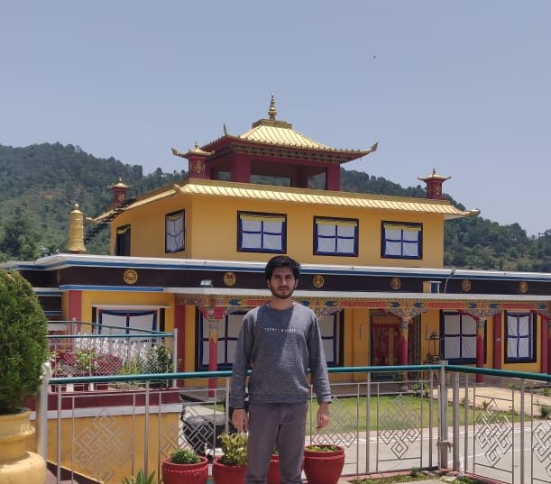

#about me

Hi! I'm Sarthak Joshi and I work as a software engineer specializing
in Front End. My workplace base location is in Bangalore, India, though I've been working
in a remote/hybrid mode since quite a while. Orginally, I hail from hilly region of Nainital, Uttarakhand, India.
#tech stack
- Holy Trinity: HTML, CSS, JavaScript to control layout, design and behavior respectively.
- TypeScript: for static typing and to prevent unforseen bugs.
- Front End Ecosystem: React; component libraries - Semantic UI, Fluent UI; state management - Redux, context, redux toolkit; hooks.
- Testing: jest, jasmine.
- Cloud: Azure, AWS.
- Backend: firebase, node.
#interests
Things that Interest me:
- Geography. I love to know more about different places and their culture, traditions.
- Basketball. My favorite sport since a highschooler.
- Foreign media. I've dabbled in multiple asian and european movies/series/sitcoms, just out of keen interest in their media. Though nothing substantial came out of it, but I'm glad it has broadened my perspective. Though I must say, in terms of genre, I always love the horror/thriller, the sheer surge in adrenaline is incomparable.
- Web programming in general.
#reach out
Some of my links:
You can contact me via mail through sarthakjoshi2496@gmail.com. In case, you would like to connect from phone, its (+91) 701-162-7558, (+91) being the ISD code for India. I'm located in IST time zone with a UTC offset of +05:30.